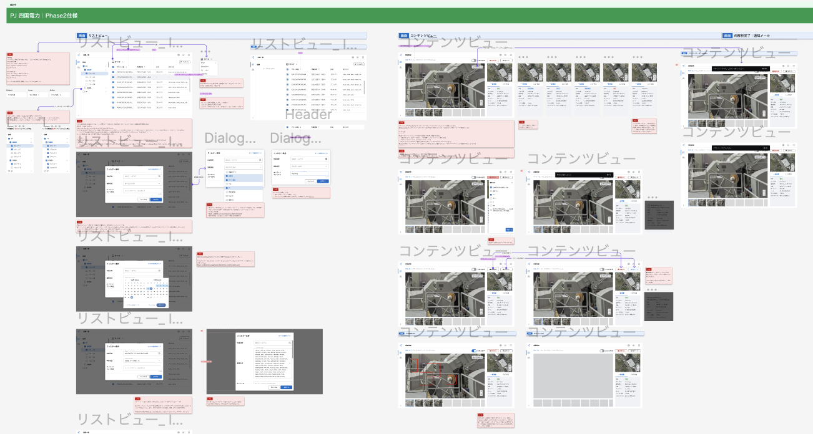

自己紹介
こんにちは！
デジタル領域で5年以上の経験を持つUIデザインおよび開発の専門家として、情熱を持って取り組んでいます。
HTML、CSS、Vue、Vuetify、Storybook、Typescriptなどの幅広いツールキットを備えており、FigmaやAdobe XDなどのデザインツールを使いこなしています。
常に革新を追求し、各プロジェクトに対して情熱と向上心を持って取り組んでいます。
- 生年月日：1996年5月12日（26歳）
- 大学: ヤンゴン外国語大学日本語専門卒業
- 国籍: ミャンマー
- 住所: 江東区、東京都
- メールアドレス: myathetchel00@gmail.com
スキル・言語
スキル
 HTML
HTML CSS
CSS SCSS
SCSS WordPress
WordPress Materialize CSS
Materialize CSS Adobe XD
Adobe XD Figma
Figma Adobe Illustrator
Adobe Illustrator Adobe Photoshop
Adobe Photoshop Vuetify
Vuetify Typescript
Typescript JavaScript
JavaScript jQuery
jQuery GitHub
GitHub Visual Studio
Visual Studio Responsive Website
Responsive Website Google Workspace Tools
Google Workspace Tools言語
 ミャンマー語 (母語)
ミャンマー語 (母語) 日本語 (上級)
日本語 (上級) 英語 (中級)
英語 (中級)自己PR
私の強みは、自己成長に必要な知識を積極的に吸収する能力です。
これは、大学を卒業後、デザインやコーディングの知識がなかった私は、ウエブデザイン班のコーディングチームメンバーとして活力できるようになったことで発揮されました。最初はIllustratorやPhotoshop、Figmaなどのデザインツールの使い方やコーディングの技術について全くの素人でしたが、自らチャレンジし、失敗から学び、勉強に励む姿勢を貫きました。
その結果、2年目には自らのスキルを向上させ、後輩たちにコーディングの指導やタスクの管理を担当するまでに成長しました。
元々デザイン分野にも興味があり、Webデザイン業界に挑戦し、さらに自身の知識を広げ、UI/UXデザインにも取り組みました。
私の目標は、デザインとコーディングの両方に精通したプロフェッショナルになることです。
この両方の知識を活かして、よりホリスティックなアプローチを提供し、プロジェクトの成功に貢献したいと思っています。
私は自分なりにやりがいや喜びを感じながら成長できる職場環境を求めています。
チームメンバーと協力して、お互いの強みを活かし合い、より良い職場環境を築きたいです。
職務経歴
-
自社デザインシステム
- チームの一員として、自社PD/PJのデザインを基にした独自のデザイン思想を開発。
- プロセスでは、他社の調査やVuetifyの機能検討を行い、デザインを定義。
- 定義したデザインをベースに、Vuetifyライブラリを使用し、TypescriptやSCSSをカスタマイズしてStorybookに実装。
- デザイナーやエンジニアと継続的にコミュニケーションを取りながら、実装済みコンポーネントのバグ修正や新しい機能の追加などの要望に対応。
-
社内のコーポレートサイト運用構築
- 自社の公式サイト、採用サイト、およびプロダクトのLPページなどの管理を担当。
- 新規ページの作成や既存ページの更新・修正・ニュースの定期リリースなど、幅広い業務を行う。
- 新しいページの作成には、Figmaを使用してマークアップデザインを作成し、コーディングまで一貫して対応。
-
プロダクトのUIデザイン作成
- 企画メンバーからの要件をヒアリングし、BtoBプロダクト・プロジェクトのFigma UI画面を作成
- 作成したデザインは、デザインチームでレビューを行い、開発者にデザインの詳細を説明
- HTML、CSS、JavaScriptを利用したレスポンシブサイト作成。
- Adobe Illustrator、Photoshop、AdobeXD やFigmaなどのデザインツールを利用したウエブサイトデザインワイヤー作成.
- クライアントサイトの更新、修正やサイト管理。
- WordPress使用のサイト構築。
- Microsoft powerpointやグーグルワックスペースアプリを利用してクライアント側からサイトの更新ができるように サイトの仕様マニュアル作成。
- お客様の希望に従って、デザインアイデア出しから開発、サイトリリースまでのスケジュール作成。
- 担当したクライアントサイトのグーグルアナリティクスレポート作成、提出。
- のぼり旗や横断幕、タペストリー等印刷系の販促グッズを紹介する広告用ランディングページや新商品のクッションページのレスポンシブ対応を制作。 基本はウエブデザイナーからもらったラフを参考に作成。
- WordPress使用の自社公式サイトや採用サイト、オウンドメディアサイトの作成。WordPressテーマのカスタマイズやプラグインの使用で、サイト修正やページ追加をの対応。
- 商品ページ用バナー作成にデザインのヘルプ。（画像の切り抜き、写真合成等）
- ミャンマーチームのタスク管理、コーディング指導、ミャンマー支社と本社とのやり取り担当。
- Adobe Illustrator、Photoshopや素材などを利用してお客様からいただいた手書きオーダーシートや参考データを見ながらのぼり旗や横断幕、タペストリーなどのデザイン制作。
- ミャンマー支社と日本本社とのやり取りや資料指示を日本語⇌ミャンマー語通訳担当。
- 印刷用データの処理（カラー、文字のアウトライン化、画像のリンクなどのチェック）。
プロジェクト
現在のプロジェクト
デザインの一貫性を確保するために、自社では独自のデザインシステムを実装中。
デザインチームとして他社の調査や当社の既存サービスのUIをベースにして、デザインの定義、作成、レビュー、そしてFigmaでのコンポーネント化を行う。

Vuetifyライブラリを使用し、Storybookで実装。TypescriptとSCSSをカスタマイズ対応。
自社のデザインシステムのバージョン1は、2024年4月に正式にリリース予定。
ウェブサイトのリニューアル、更新、修正、およびその他のニーズに関するプロダクトランディングページのデザインとコーディングを担当。
LPページの設計からコーディングまでのエンドツーエンドのサポートを提供し、HubSpotでの実装を得意としている。

企画メンバーからの要件をヒアリングし、BtoBプロダクト・プロジェクトのFigma UI画面を作成。
過去のプロジェクト
販売サイトのリニューアル制作や新商品の注文ページ作成。 複数人でコーディングを行う体制だったので、この案件のみに適用するコーディングルールを設け制作。 デザインの部分で、いくつか同じデザインの派生ページが発生した為、マークアップ・スタイル記述はパーツを細分化して、どのブロックでも使えるレスポンシブサイト作成。
 View Website
View Website
WordPress使用の自社公式サイトの更新、修正、コンテンツ追加などの対応。

WordPress使用の自社採用サイト、オウンドメディアサイトの作成。 WordPressテーマのカスタマイズやプラグインの使用で、サイト修正やページ追加の対応。

Wordpress利用のウエブサイトリニューアル。
デザインのアイデア出しからラフ作成、コーディング、リリースまでのスケジュール作成、ユーザーマニュアル作成を対応。
ニューモーフィズムデザインを使った、大学の社会連携プログラムサイト作成。
新サイト作成で、サイバー内のWordPressインストールからサイト構築、公開までの作業、マニュアル作成全部対応。

WordPress利用のサイトリニューアル。
デザインナーからもらったラフデザインを基にして、サイト作成。